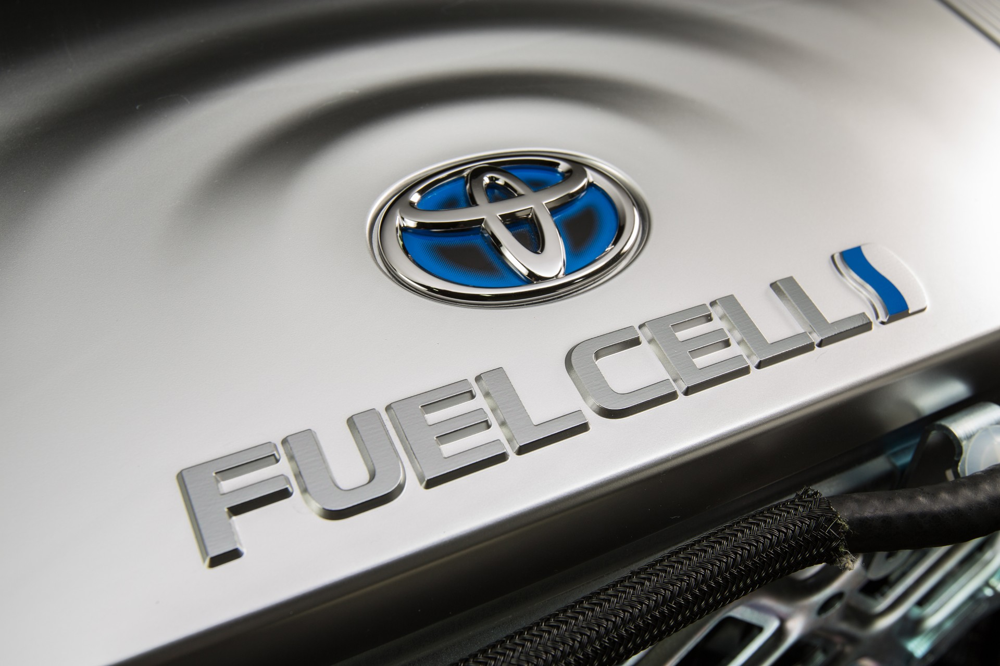

2016 Toyota Mirai Fuel-Cell Sedan Debuts with Fancy Tech, Tire-Fire Styling
The first-generation Toyota Prius wasn’t cute—that sucking-on-a-lemon face, awkwardly tall body, stubby trunk, funny little wheels—and yet we’re being barraged by image after image of the little frumpster during a Toyota slideshow at the launch of its new fuel-cell electric vehicle, the Mirai. It is all part of an effort to cement in our minds a connection between the Mirai, which means “future” in Japanese, and the ever-popular Prius. Prius, for those of you that don’t know Latin, means “to go before.” Indeed, Toyota claims that it has been working on fuel cells and hybrids for about two decades, but the hybrid came out first. Hence the naming scheme.
Styling: “Oxygen In, Water Out”
The Mirai already mirrors the Prius in one obvious respect: its frumpalicious styling. A near-clone of last year’s FCV concept that previewed the production model, the Mirai has nearly the same footprint as the Camry hybrid but is 2.5 inches taller. Carried into production, unfortunately, are the FCV’s gaping triangular outboard air intakes (fuel cells need a lot of cooling, apparently), which contain foot-tall vertical LED running lamps and have turn signals on their outer edges. Perched about the bumper are scowling LED headlamps and an odd “floating” hood. The body features flowing fenders and Dodge Intrepid–like blackout windows, terminating in a rear end that can best be summed up as “WTF?”, with a band of LED taillamps crossing the trunk as well as messy triangular forms containing the ancillary lighting.
For what it’s worth, Toyota Motor Corporation’s managing officer Satoshi Ogiso offers an explanation for the stylistic cacophony: “ ‘Oxygen in, water out,’ in fact, was an important part of the styling—of form based on function. The sides of the car are meant to convey the transformation of air into water, with flowing door profiles. The rear uses a catamaran shape representing water flowing under and through the body.” That sounds a lot sexier than the reality, but okay.
Ogiso further explains that it’s essentially another attempt at the weird-is-cool strategy that worked like gangbusters for the Prius. “It’s no secret that when we launched Prius, we decided that making it look different from any other car on the road was a risk that needed to be taken,” he says. “Prius styling was distinctive then and still is today. We think Mirai will be, as well. If the name of your car means ‘the future,’ it had better look futuristic.” We’ll see if the strategy works, but purely from a styling standpoint, we prefer Honda’s version of the hydrogen-fueled future, the FCEV.
The “Future” Arrives in, Well, the Future
The Mirai goes on sale in Japan by the end of the year but doesn’t cross the Pacific until the fourth quarter of 2015. Sales initially will be limited to California, primarily because that’s where the fledgling infrastructure is most mature and also to keep the cars close enough to Toyota’s corporate headquarters so that the company can support both the vehicles and the select dealers peddling them during the inevitable teething phase.
Initial pricing has been set at $58,325; some $13,000 in federal and California state incentives will drop the price down to about $45K. Toyota says that about 90 percent of Mirai customers, however, are expected to choose the $499-per-month lease with $3649 due at signing. The deal includes a 24-hour concierge service (with calls answered by a real-live fuel-cell expert), roadside assistance, three years of vehicle maintenance, eight years or 100,000 miles of warranty coverage for fuel-cell components, and, best of all, complimentary fuel for "up to" the first three years.
Besides the matter of infrastructure support, many questions remain unanswered regarding the maintenance and replacement costs for the fuel-cell powertrain and its supporting hardware, how much hydrogen will cost when prices are finally established, and more. For all this, Toyota expects it should be able to entice about 200 early adopters in the first year, ramping up to roughly 3000 total on the roads by the end of 2017.
©2015 Miral